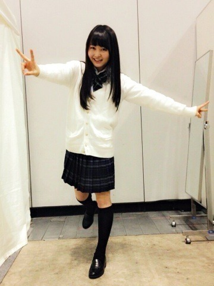
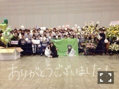

| 2014/03 04 Tue | チャージ中。552回目 |
バレッタ最後の個握は
パシフィコ横浜で！
昨日はどこのレーンも華やかでした。

1部 ストレート
2部 二つ結び
ラストJKということで、
現役の内に制服を着ました。
リボンと靴下だけ自前。
あとは全部みなみに借りました。
スカートは折ってません。
みなみありがとう！

3部 ゆる巻
ワンピース/ヒールスリッポン mystic
ボンボンヘアゴム カオリノモリ
ピンクをアクセントにほぼ白！
普段膝丈が多いからミニ丈、
ヒールも高めで珍しいー
このワンピを私は
はんぺんワンピースと呼んでいます。
たくさんのおめでとう
ありがとうございました。
3部終わりにファンのみなさんに
お祝いしていただきました。

服はなんで白を選んだかというと、
実は意味がありまして...
18歳になってこれからの目標かな。
真っ白そのまま、いろんな色に
自分を染められるようになりたい
これをみなさんの前で
言いたかったんですけど
全部吹っ飛んだ！！
レーンも横断幕もバルーンも
好きな緑色で、握手する所は
私の部屋をイメージしてくれて...
お花もケーキも風船もメッセージも
全部私のためにしてくださったことに
本当に感激しました。
去年のこと考えると余計に、
それくらい17歳の一年間は
濃いものだったんだと
改めて思いました。
ねねからのお手紙
言ってくれる前に泣いてしまった。
ありがとうだいすき
こんなにたくさんの方が
私を支えてくれているんだ。
もちろん、握手会にくる人だけでなく
コメントで応援してくれる方も！
応援してくださる方が
増えてきているの実感しています。
幸せです。
みなさんがいるんだから
こわいものなんてないね！
本当にありがとう。
いつもありがとうございます。
そしてこれからも
伊藤万理華をよろしくお願いします。
8thの握手会もよろしくだーーーーー

精一杯のウインク
まりか
コメント(553)
2014/03/04 00:00